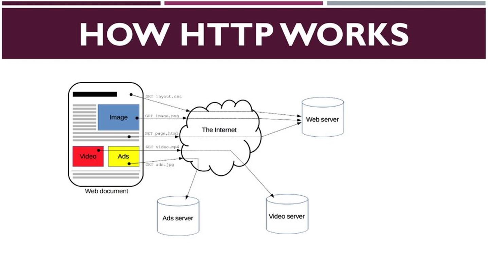

The Hypertext Transfer Protocol (HTTP) is the foundation of the World Wide Web, and is used to load web pages using hypertext links. HTTP is an application layer protocol designed to transfer information between networked devices and runs on top of other layers of the network protocol stack. A typical flow over HTTP involves a client machine making a request to a server, which then sends a response message.
- HISTORY OF HTTP:
The term hypertext was coined by Ted Nelson in 1965 in the Xanadu Project, which was in turn inspired by Vannevar Bush's 1930s vision of the microfilm-based information retrieval and management "memex" system described in his 1945 essay "As We May Think". Tim Berners-Lee and his team at CERN are credited with inventing the original HTTP, along with HTML and the associated technology for a web server and a client user interface called web browser. Berners-Lee first proposed the "WorldWideWeb" project in 1989, now known as the World Wide Web.
The first web server went live in 1990.The protocol used had only one method, namely GET, which would request a page from a server.The response from the server was always an HTML page
- HTTP SESSION:
An HTTP session is a sequence of network request–response transactions. An HTTP client initiates a request by establishing a Transmission Control Protocol (TCP) connection to a particular port on a server (typically port 80, occasionally port 8080; see List of TCP and UDP port numbers). An HTTP server listening on that port waits for a client's request message. Upon receiving the request, the server sends back a status line, such as "HTTP/1.1 200 OK", and a message of its own. The body of this message is typically the requested resource, although an error message or other information may also be returned